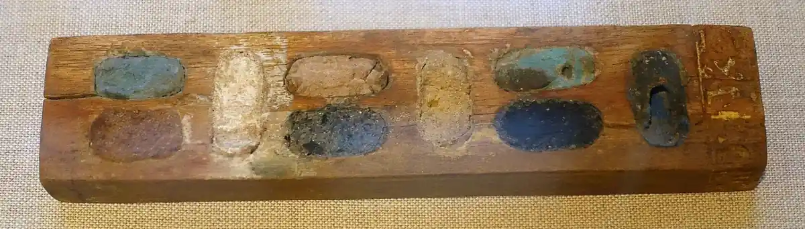
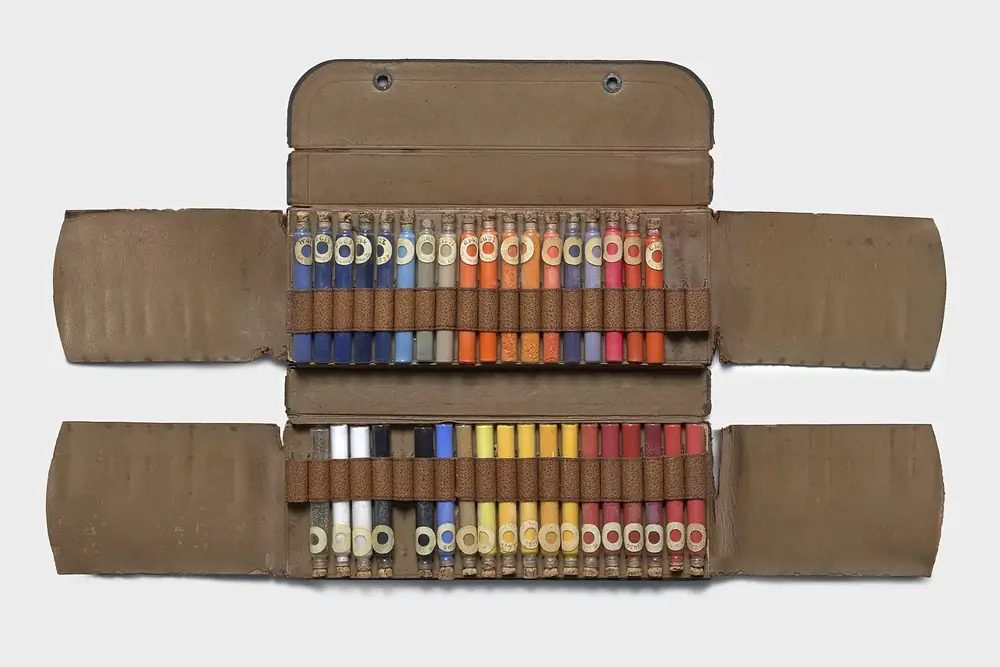

- Yellow ochrePY43 · earth
- Raw siennaPBr7 · earth
- Burnt siennaPBr7 · earth
- Raw umberPBr7 · earth
- Burnt umberPBr7 · earth
- Red ochrePR102 · earth
- Terre vertePG23 · earth
- ChalkPW18 · mineral
- Lapis ultramarinePB29 · mineral
- AzuritePB30 · mineral
- MalachitePG39 · mineral
- Bone blackPBk9 · mineral
- UltramarinePB29 · synthetic
- Phthalo greenPG7 · synthetic
- Quinacridone rosePV19 · synthetic
- Mars blackPBk11 · synthetic
Pigment by weight, named by colour index
Earths, minerals and a short list of modern synthetics, sold dry so you can grind them into the paint you actually want. Every jar carries its colour-index name and its origin, so you know what is inside before the lid comes off. Click any block on the wall to read that pigment's entry.
- Dry pigment by weight, not ready-made paintWeighed to order into the jar size you ask for.
- Colour-index name on every jarPY43 is yellow ochre whichever mine it came from.
- Earths, minerals and a few modern syntheticsThe origin is written beside the name, always.
- No industrial, cosmetic or tattoo useSold for painting only; the maker's sheet travels with the order.
What a colour shop sells
Four kinds of thing, and one card. Everything is sold by enquiry: tell us the pigments and the weights, and the order is weighed, labelled and posted.
Dry pigment by weight
Earths first: yellow ochre PY43, the siennas and umbers that share PBr7, red ochre PR102 and terre verte PG23, then the minerals and a handful of synthetics kept because no earth can give a painter that hue. Each jar is weighed to order and labelled with the colour-index name, the origin and the lightfastness as the maker publishes it.
Binders and mediums
Gum arabic for watercolour and gouache, cold-pressed linseed oil for oil paint, the parts of egg tempera that keep on a shelf, and rabbit-skin size for grounds. Sold in the quantity a painter mulling at home will use before it turns.
Grinding tools
Glass mullers in a few hand sizes, ground-glass slabs, painting knives that flex enough to gather a paste off the glass, and sieves in several mesh counts for pigment that arrives lumpy. Nothing electric; a slab and a muller do the whole job.
Jars, tubes and labels
Empty collapsible tubes with caps, screw-top jars for dry pigment, and plain gummed labels so the paint you make can be named the way we name ours: pigment, binder, the day it was mulled.
Swatch cards by post
Name the pigments you are weighing up and the binder you paint in, and we brush them out on a proper paper with the colour-index name written beside each swatch. It is the honest way to choose between two ochres, and it is how most first orders begin.
A box, a case and the bed it came out of
Colour kept loose has always been kept like this: one to a well, one to a slot, named on the lid. The pictures sit down here because the wall above them is the real argument.


From an enquiry to a jar on your bench
ZD Pigments is a colour shop, not a paint factory. We buy dry pigment from makers who publish what it is, we weigh it into jars against a written order, and we send it with the maker's own sheet. What we add is the labelling and the plain description: the colour-index name, the origin, how the pigment behaves in water and in oil, and how much binder it tends to drink. That description is written from the slab, not copied from a catalogue.
An order begins with the form on the swatch-card page or an email to the shop. Name the pigments, the weights you want, and the binder you paint in. If you are not sure between two colours, ask for a swatch card first; we brush the candidates out in your binder on a proper paper and post the card, and most people find the choice makes itself. Once the order is settled we reply with what is in stock, what is not, and when it will go out. Weighing is done against that reply, jar by jar, and each jar is labelled before the next is started so that two earths of the same colour-index name are never confused on the bench.
Orders are posted within the United Kingdom. Pigment travels in screw-top jars inside a padded box; binders travel sealed and upright. If something arrives broken, send the shop a photograph and we will take it from there. We keep no card details and no account for you: every order is a fresh enquiry, answered by a person.
What we value is plain naming. A jar that says yellow ochre PY43, natural earth tells a painter more than a poetic trade name ever could, and it lets a colour be reordered and matched. We list lightfastness as the maker publishes it and never grade it ourselves. Where a pigment is known to granulate, to be greedy for oil, or to tint weakly, the entry says so, because a surprise on the slab is a wasted afternoon.
What we turn down is listed beside this, and we turn it down without exception. The reason is simple: a shop that sells pigment for painting can describe how a colour behaves in a binder; it cannot responsibly tell you what happens when the same powder goes on skin, in food, or into an industrial process, and we will not pretend to.
Answered as the shop would answer them
- Can I buy one jar or is there a minimum?
One jar. Pigment is weighed to order into the jar size you ask for, so a single small jar of raw umber is an ordinary order. Painters trying out a palette usually begin with a few earths at small weights and come back for larger jars of the ones they use most. There is no minimum weight and no minimum number of jars.
- Is this pigment safe for skin or food?
We sell for painting, and only for painting. Nothing here is offered for cosmetic, food, tattoo or industrial use, and we do not test, classify or label pigment for any of those. The maker's own sheet travels with every order; for handling, toxicity or disposal questions, ask the maker or your local authority rather than us.
- Do you sell ready-mixed paint?
No. Everything on the shelves is dry pigment, a binder, or a tool for turning one into the other. If you want a finished tube of colour, a general art shop is the right place. If you want to know exactly what is in your paint and how much of it, this is.
- Which binder should a beginner start with?
Gum arabic. It washes off the slab with water, keeps in a jar for weeks, and a small pan of home-made watercolour teaches you more about a pigment's habits than a month of reading. Linseed oil comes next, once you have a feel for how much binder an earth drinks.
- How much pigment makes a tube of paint?
It depends on the pigment's oil absorption more than anything. A dense earth such as red ochre takes little oil and fills a tube from a modest heap; a fluffy pigment such as raw umber swells with binder and needs less powder for the same volume. The grinding page shows how to judge a first batch by eye, and a swatch card tells you how each colour behaves before you commit to a large jar.
- Do you ship outside the United Kingdom?
Not at present. Orders are posted within the United Kingdom only; the paperwork for sending loose pigment across a border is more than a small shop should carry. If you are outside the UK we are still glad to answer a question about a pigment by email.
- Can you tell me what pigment is in a painting I own?
No. Identifying or authenticating pigment in an existing work is a conservator's job done with a conservator's instruments, and an opinion from a photograph would be worth less than nothing. We can tell you how a named pigment behaves; we cannot tell you which one is on your wall.
A brushed-out swatch beats a screen
No monitor shows the granulation of a terre verte or the way raw umber sinks into oil. Name the pigments you are weighing up and the binder you use, and a card comes by post with each one brushed out and labelled.
Ask for a swatch cardNorwich, Norfolk, and the post
We are placed in Norwich and serve painters across the United Kingdom by post. There is no counter to walk up to; enquiries come by the form or by email and are answered in the order they arrive.
- Emailcolour@zdpigments.com
- RepliesTuesday to Saturday, 10:00 to 17:30. Written the same working day where we can, and usually within two.
- WhereNorwich, Norfolk, England. Orders posted to addresses within the United Kingdom.
- Not by phonePigment names and weights are easy to mishear; the written order is the one we weigh against.